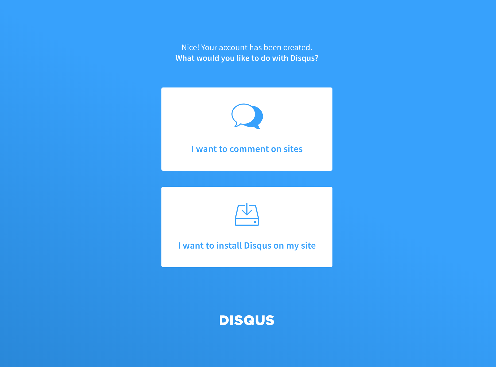

방문자와의 소통을 위해서 블로그의 댓글 기능은 매우 유용하고 필요한 기능입니다. 직접 만들어 쓰려면 손이 꽤 많이가는 기능이기도 하죠.
예전에 django 로 블로그 만들기를 시도해 봤는데 django 가 워낙 잘 만들어진 웹 프레임워크라 그나마 손 쉽게 작업을 할 수 있었지만 방문자들과의 소통이 목적이라고 한다면 지금 설명드리려는 설치형 댓글 시스템에 비하면 엄청나게 비효율 적인 선택이었다고 생각합니다.
다행히 설치형 댓글 서비스를 제공해주는 업체들이 있습니다. 많은 서비스중 Disqus 라는 댓글 서비스를 hexo 블로그에 적용하는 방법을 소개하려고 합니다. Disqus 경우 hexo 의 설정 파일을 통해 손쉽게 적용할 수 있지만 아쉽게도 hexo 설정 파일이 아닌 theme 의 설정 파일을 수정해 줘야 합니다.
제가 사용중인 clean-blog 테마의 경우 comments.ejs 파일에 disqus, facebook 댓글 관련 코드가 작성되어 있는 것을 볼 수 있는데, 이것은 theme 마다 설정 방법이 다를 수 있음을 의미합니다.
1 | <% if(page.comments && theme.comments && theme.comments.disqus_shortname){ %> |
처음 사용하는 theme 경우 앞서 언급한 comments.ejs 와 같은 파일을 통해 어떤 댓글 서비스를 지원하는지 파악하기가 쉽지 않습니다. 그럼 내가 선택한 theme 가 어떤 댓글 서비스를 지원하는지는 어떻게 알 수 있을까요?
Theme Disqus support
내가 선택한 theme 가 어떤 댓글 서비스를 지원하는지 확인하는 가장 좋은 방법은 theme 의 저장소를 방문하는 것 입니다. 보통 잘 만들어진 테마 경우 저장소에 주요 기능에 대한 설명이 상세히 작성된 파일을 가지고 있습니다.
제가 사용중인 clean-blog theme 의 경우 역시 README.md 에 지원하는 기능에 대해 상세히 기술하고 있으며 comments 섹션 에서 Disqus, Facebook 의 댓글 지원에 대한 설명을 확인할 수 있습니다.
1 | # Comments. Choose one by filling up the information |
위와 같은 방법을 사용하면 저와 다른 theme 를 사용하시더라도 해당 theme 에서 지원하는 댓글 서비스 확인에 도움이 되지 않을까 싶습니다.
저는 Disqus 를 사용할 것이기 때문에 Facebook 관련 설정은 주석처리 합니다. 이제 disqus_shortname 에 값만 넣어주면 댓글을 사용할 수 있을 것 같은데요. 해당 값은 어디서 알 수 있을까요?
Disqus settings
disqus_shortname 값은 Disqus 에서 확인할 수 있습니다. 아이디가 없으신 분들은 먼저 회원 가입을 하시고 아래 순서대로 진행합니다.
-
회원 가입 후 메인 화면의 GET STARTED 버튼을 클릭합니다.
-
아래 보이는 GET STARTED 페이지에서 I want to install Disqus on my site 를 클릭합니다.

-
아래 이미지와 같은 Create a new site 화면을 볼 수 있습니다.
Website Name 란을 작성하셔서 아래에 Your unique disqus url will be :test-0pisjqhoqo.disqus.com와 같은 URL 이 표시됨을 확인합니다. 나머지 category, language 값 선택 후 Create Site 버튼을 클릭합니다. -
plan 선택 페이지가 나오는데 저는 무료 사용을 위해
Basic을 선택했습니다. -
다음으로 댓글을 붙일 웹 사이트의 platform 을 선택해야 합니다. 아쉽게도 저희가 사용하는 hexo 는 보이지 않기 때문에 코드를 직접 삽입하기 위해 가장 아래에 있는 I don’t see my platform listed, install manually with Universal Code 를 선택합니다.
clean-blog 경우 theme 에서 Disqus 설정을 지원하기 때문에 코드를 직접 삽입하지는 않습니다. -
코드를 직접 삽입하는 방법을 가이드하는 페이지가 나옵니다. 가이드가 생각보다 친절하기 때문에 지원하는 platform 에 없다고 실망하시지 않으셔도 됩니다. 가이드는 댓글을 사용을 위한 코드 삽입(Youtube), 댓글 노출을 위한 코드 삽입(Youtube) 두가지를 설명해 줍니다.
저희는 직접 코드를 삽입하지 않기 때문에 아래 Configure 버튼을 클릭해 줍니다.
-
설정 페이지가 나옵니다. Website URL 및 필요한 설정을 완료 후 Complete Setup 버튼을 클릭합니다.
-
설정이 완료되면 아래와 같은 화면이 나오며 Disqus 설치 완료 후 할 일에대해 안내(6 Things To Do After Installing Disqus)해 줍니다. 저희는
disqus_shortname값 확인을 위해 화면 가운데 위치한 Configure your site’s community settings 버튼을 클릭합니다. -
Configure Disqus for your site 페이지로 이동합니다. 설정 페이지에서 Shortname 을 확인할 수 있습니다. 해당 값을 복사하여 clean-blog 테마의
disqus_shortname값으로 넣어줍니다. 해당 페이지에서 추가로 설정할 부분이 있으면 설정하고 Save 버튼을 누르면 끝 입니다. -
hexo 서버를 다시 실행하고 post 페이지로 가보면 아래와 같이 Disqus 댓글 UI 가 노출되는 것을 확인하실 수 있습니다.
절차가 조금 복잡하긴 하지만 생각보다 쉽게 댓글 기능을 추하였습니다. 이제 블로그 방문자들과 소통할 일만 남았습니다. 좋은 컨텐츠를 제공하고 방문자들과 함께 컨텐츠를 소비하고 소통하는 일은 사소하지만 생각보다 즐겁고 새로운 경험을 제공해 줍니다.
아직 댓글 기능을 달지 않은 분들은 꼭 한번 달아보시길 바라며 궁금한 점 있으시면 댓글 남겨주시면 감사하겠습니다.